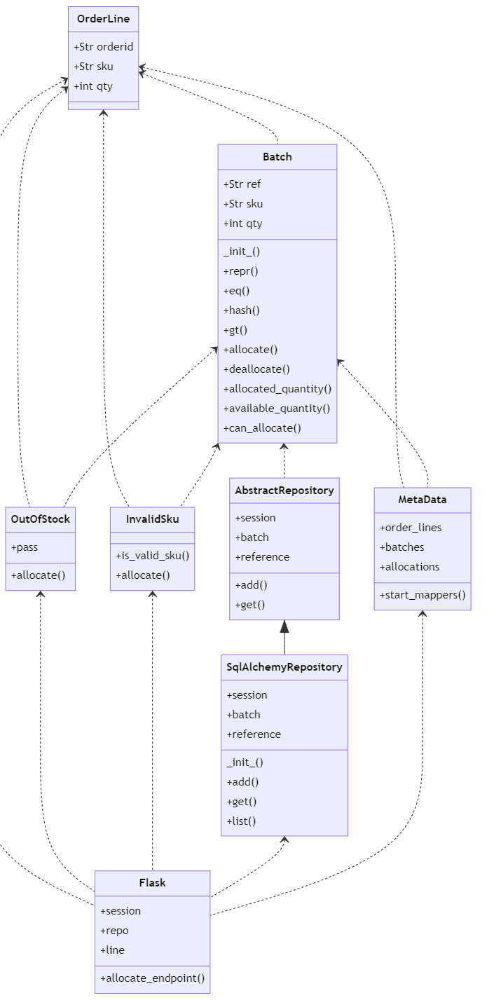

SA Lab1 Dependency Analysis and Dependency Graphs¶
201931990124 刘长优
201931990122 黄凯峰
201931990130 王晨航
201931990127 骆纪元
Abstract¶
分析三个项目各自的内部依赖，利用工具绘制模块、类/函数依赖关系图，通过比较，加深对软件体系结构的理解。
Introduction¶
EnglishPal是一款面向希望提升自身英语阅读能力的用户，提供英语文章学习服务的轻量级在线网站。
它内设了多达百篇不同难度等级的文章，会根据用户的英语水平为用户提供相应难度的文章进行练习；同时，每一个用户还享有独立的生词本，用户可以将在阅读文章过程中遇到的生词收集起来，在复习中进行针对性记忆。
本次实验通过分析项目在模块、类两个层次上的依赖关系，使用工具对依赖关系图形化，理解不同软件架构的优缺点。
Materials and Methods¶
pydeps-Python module dependency visualization: 可视化项目模块间依赖关系
Graphviz: 图形化.dot文件
Mermaid: 生成类/函数关系图
Results¶
BeginningOfSpring¶
模块
digraph G {
concentrate = true;
rankdir = TB;
node [style=filled,fillcolor="#ffffff",fontcolor="#000000",fontname=Helvetica,fontsize=10];
Yaml [fillcolor="#c24747",fontcolor="#ffffff"];
app_Article [fillcolor="#80b34c",label="app.Article"];
app_Yaml [fillcolor="#80b34c",label="app.Yaml"];
app_account_service [fillcolor="#80b34c",label="app\.\naccount_service"];
app_main [fillcolor="#80b34c",label="app.main"];
app_user_service [fillcolor="#7aac49",label="app\.\nuser_service"];
flask [fillcolor="#26d9d9"];
yaml [fillcolor="#8553b6",fontcolor="#ffffff"];
Yaml -> app_main [fillcolor="#c24747",minlen="2"];
Yaml -> app_user_service [fillcolor="#c24747",minlen="2"];
flask -> app_Article [fillcolor="#26d9d9",minlen="2"];
flask -> app_account_service [fillcolor="#26d9d9",minlen="2"];
flask -> app_user_service [fillcolor="#26d9d9",minlen="2"];
yaml -> app_Yaml [fillcolor="#8553b6",minlen="2"];
}

类/函数
graph TD
check_username_availability-->signup
add_user-->signup
get_expiry_date-->signup
verify_user-->signup
get_expiry_date-->login
verify_user-->login
logout
change_password-->reset
total_number_of_essays
get_article_title
get_article_body
load_freq_history-->get_today_article
get_difficulty_level-->get_today_article
user_difficulty_level-->get_today_article
text_difficulty_level-->get_today_article
get_article_title-->get_today_article
get_article_body-->get_today_article
get_question_part-->get_today_article
get_answer_part-->get_today_article
load_record-->load_freq_history
within_range
get_question_part
get_answer_part
load_record
difficulty_level_from_frequency
difficulty_level_from_frequency-->get_difficulty_level
revert_dict-->user_difficulty_level
sort_in_ascending_order-->user_difficulty_level
remove_punctuation-->text_difficulty_level
freq-->text_difficulty_level
md5-->verify_user
instructions_with_parameters-->verify_user
md5-->add_user
check_username_availability
verify_user-->change_password
md5-->change_password
get_expiry_date
md5
get_random_image
get_random_ads
appears_in_test
load_freq_history-->mark_word
dict2lst-->mark_word
merge_frequency-->mark_word
save_frequency_to_pickle-->mark_word
get_freq-->mainpage
load_freq_history-->mainpage
dict2lst-->mainpage
merge_frequency-->mainpage
save_frequency_to_pickle-->mainpage
get_random_ads-->mainpage
total_number_of_essays-->mainpage
load_freq_history-->mainpage
sort_in_descending_order-->mainpage
lst2dict
dict2lst
lst2dict-->merge_frequency
load_record
save_frequency_to_pickle
unfamiliar
familiar
lst2dict
deleteRecord
dict2lst
lst2dict-->merge_frequency
load_record
save_frequency_to_pickle
user_reset
unfamiliar-->unfamiliar
familiar-->familiar
deleteRecord-->deleteword
get_freq-->userpage
load_freq_history-->userpage
dict2lst-->userpage
sort_in_descending_order-->userpage
get_today_article-->userpage
load_freq_history-->user_mark_word
dict2lst-->user_mark_word
merge_frequency-->user_mark_word
save_frequency_to_pickle-->user_mark_word
get_time
get_flashed_messages-->get_flashed_messages_if_any
freq
youdao_link
file2str
remove_punctuation
sort_in_descending_order
sort_in_ascending_order
make_html_page

ColdDew¶
模块
digraph G {
concentrate = true;
rankdir = TB;
node [style=filled,fillcolor="#ffffff",fontcolor="#000000",fontname=Helvetica,fontsize=10];
app_main [fillcolor="#b34c4c",fontcolor="#ffffff",label="app.main"];
flask [fillcolor="#40bfc0"];
flask -> app_main [fillcolor="#40bfc0",minlen="2"];
}
类/函数
classDiagram
UseSqlite <|-- main
WordFreq<|-- main
difficulty<|-- main
wordfreqCMD <|-- WordFreq
wordfreqCMD <|-- difficulty
class UseSqlite{
+ query
+instructions(query)
}
class difficulty{
+ pickle_fname
+ word
+ s
+ d
+ d1
+ d2
+ d3
+ d_user
+load_record(pickle_fname)
+difficulty_level_from_frequency(word,d)
+get_difficulty_level(d1,d2)
+revertdict(d)
+user_difficulty_level(d_user, d)
+text_difficulty_level(s, d)
}
class WordFreq{
+s
+get_freq()
}
class wordfreqCMD{
+fruit
+s
+fname
+lst
+freq(fruit)
+youdao_link(s)
+file2str(fname)
+remove_punctuation(s)
+ sort_in_descending_order(lst)
+ sort_in_ascending_order(lst)
+ make_html_page(lst, fname)
}
class pickle_idea{
+lst
+d
+lst1
+lst2
+pickle_fname
+path
+word
+lst2dict(lst, d)
+dict2lst(d)
+merge_frequency(lst1, lst2)
+load_record(pickle_fname)
+save_frequency_to_pickle(d, pickle_fname)
+unfamiliar(path,word)
+familiar(path,word)
}
class pickle_idea2{
+lst
+d
+lst1
+lst2
+pickle_fname
+path
+word
+lst2dict(lst, d)
+deleteRecord(path,word)
+dict2lst(d)
+merge_frequency(lst1, lst2)
+load_record(pickle_fname)
+save_frequency_to_pickle(d, pickle_fname)
}
class main{
+path
+username
+password
+x
+y
+r
+s
+user_word_list
+articleID
+word
+d
+_init_()
+get_random_image(path)
+get_random_ads()
+total_number_of_essays()
+load_freq_history(path)
+verify_user(username, password)
+add_user(username, password)
+check_username_availability(username)
+get_expiry_date(username)
+within_range(x, y, r)
+get_article_title(s)
+get_today_article(user_word_list, articleID)
+appears_in_test(word, d)
+get_time()
+get_question_part(s)
+get_answer_part(s)
}
Chap4¶
模块
digraph G {
concentrate = true;
rankdir = TB;
node [style=filled,fillcolor="#ffffff",fontcolor="#000000",fontname=Helvetica,fontsize=10];
app_flask_app [fillcolor="#a44646",fontcolor="#ffffff",label="app.flask_app"];
app_orm [fillcolor="#a44646",fontcolor="#ffffff",label="app.orm"];
flask [fillcolor="#40c040"];
sqlalchemy [fillcolor="#1919e6",fontcolor="#ffffff"];
sqlalchemy_orm [fillcolor="#2323c8",fontcolor="#ffffff",label="sqlalchemy.orm"];
sqlalchemy_orm_mapper [fillcolor="#3d3db8",fontcolor="#ffffff",label="sqlalchemy\.\norm\.\nmapper"];
flask -> app_flask_app [fillcolor="#40c040",minlen="2"];
sqlalchemy -> app_flask_app [fillcolor="#1919e6",minlen="2"];
sqlalchemy -> app_orm [fillcolor="#1919e6",minlen="2"];
sqlalchemy_orm -> app_flask_app [fillcolor="#2323c8",minlen="2"];
sqlalchemy_orm -> app_orm [fillcolor="#2323c8"];
sqlalchemy_orm_mapper -> app_orm [fillcolor="#3d3db8",minlen="2"];
sqlalchemy_orm_mapper -> sqlalchemy_orm [fillcolor="#3d3db8",weight="2"];
}

类/函数
classDiagram
AbstractRepository <|-- SqlAlchemyRepository
OrderLine <.. OutOfStock
Batch <.. OutOfStock
OrderLine <.. Batch
OrderLine <.. MetaData
Batch <.. MetaData
Batch <.. AbstractRepository
OrderLine <.. InvalidSku
Batch <.. InvalidSku
OrderLine <.. Flask
OutOfStock <.. Flask
InvalidSku <.. Flask
SqlAlchemyRepository <.. Flask
MetaData <.. Flask
class AbstractRepository{
+session
+batch
+reference
+add()
+get()
}
class SqlAlchemyRepository{
+session
+batch
+reference
_init_()
+add()
+get()
+list()
}
class OutOfStock{
+pass
+allocate()
}
class OrderLine{
+Str orderid
+Str sku
+int qty
}
class Batch{
+Str ref
+Str sku
+int qty
_init_()
+repr()
+eq()
+hash()
+gt()
+allocate()
+deallocate()
+allocated_quantity()
+available_quantity()
+can_allocate()
}
class MetaData{
+order_lines
+batches
+allocations
+start_mappers()
}
class InvalidSku{
+is_valid_sku()
+allocate()
}
class Flask{
+session
+repo
+line
+allocate_endpoint()
}

Comparing BeginningOfSpring with ColdDew¶
| | ColdDew | BeginningOfSpring | | ———————————————————— | ——- | —————– | | Lines of code in main.py (excluding blank lines and comments) | 499 | 115 | | Number of HTML files in folder templates | 2 | 9 | | Has a service layer? Answer Yes or No. | No | Yes | | Front-end and back-end coupling. Answer Strong or Weak. | Strong | Weak | | Number of module-level dependencies | 1 | 6 |
Discussions¶
From a scale 1 (worst) to scale 5 (best), how would you evaluate the architectural health of each version of EnglishPal? Which version of EnglishPal is easier to understand and maintain? Explainin no more than 3 sentences.
Pros and cons of the current architecture of EnglishPal, BeginningOfSpring.
1.架构健壮性评估¶
ColdDew: 1
BeginningOfSpring: 4
2.BeginningOfSpring可维护性和可读性高¶
ColdDew的main.py太臃肿了，难以阅读和理解
ColdDew后端代码和前端HTML混合在一起，不利于维护
3.BeginningOfSpring的架构的优缺点¶
优点¶
前后端分离，项目具有良好的可读性和可维护性
项目有一个基本的层次结构，便于扩展
缺点¶
虽然分离了前后端，但是后端代码中依然存在HTML
项目注释不够完善，模块的定义模糊